Contents
zad 1
clear all; close all; clc;
ImColor = imread('Lenna_(test_image).png');
ImGray = rgb2gray(ImColor);
Hist_own_gray(1,:) = ImGray(:);
Hist_own_color_red(:,:) = ImColor(:,:,1); Hist_own_color_red = Hist_own_color_red(:);
Hist_own_color_green(:,:) = ImColor(:,:,2); Hist_own_color_green = Hist_own_color_green(:);
Hist_own_color_blue(:,:) = ImColor(:,:,3); Hist_own_color_blue = Hist_own_color_blue(:);
imhist(ImColor); title('Histogram obrazu kolorowego - wbudowana funkcja');
figure; imhist(ImGray); title('Histogram obrazu szarego - wbudowana funkcja');
figure; histogram(Hist_own_gray,256); title('Histogram obrazu szarego - własna funkcja');
figure; histogram(Hist_own_color_red,256); title('Histogram obrazu kolorowego (RED) - własna funkcja');
figure; histogram(Hist_own_color_green,256); title('Histogram obrazu kolorowego (GREEN) - własna funkcja');
figure; histogram(Hist_own_color_blue,256); title('Histogram obrazu kolorowego (BLUE) - własna funkcja');
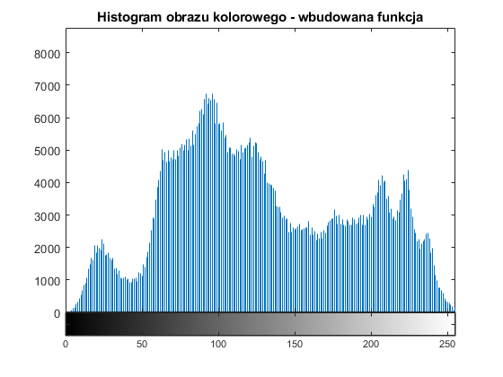 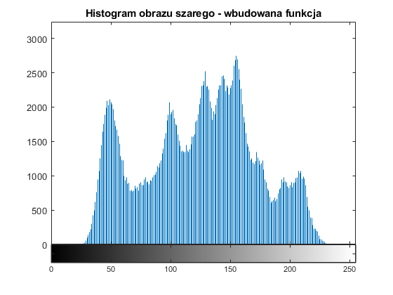 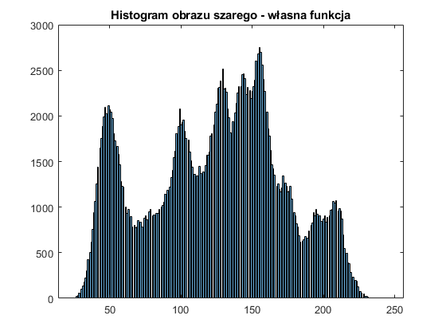 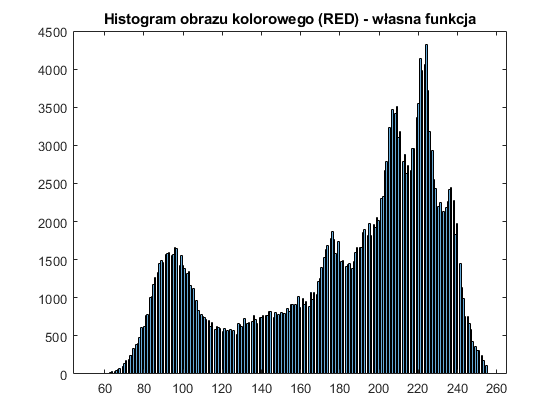 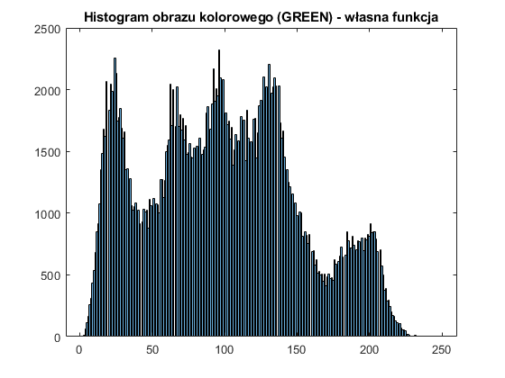 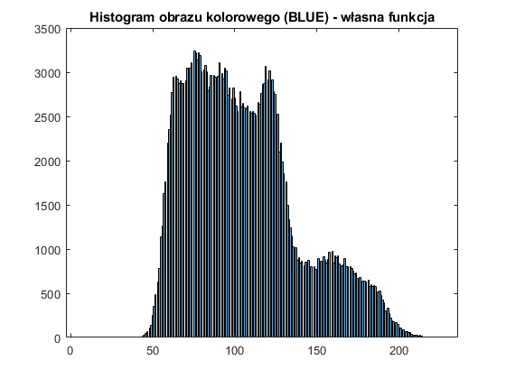
zad 2
clear all; close all; clc;
ImCol = imread('Lenna_(test_image).png');
ImGray = rgb2gray(ImCol);
HistGray = imhist(ImGray);
HistCol = imhist(ImCol);
Hist_Gray_cum = cumsum(HistGray);
Hist_Col_cum = cumsum(HistCol);
Hist_Gray_cum = round(Hist_Gray_cum/(size(ImGray,1)*size(ImGray,2))*255);
Hist_Col_cum = round(Hist_Col_cum/(size(ImCol,1)*size(ImCol,2))*255);
figure; bar(Hist_Gray_cum); title('Kumulacyjny histogram obrazu w odcieniach szarości');
figure; bar(Hist_Col_cum); title('Kumulacyjny histogram obrazu kolorowego');
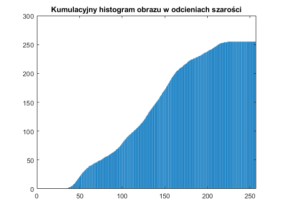 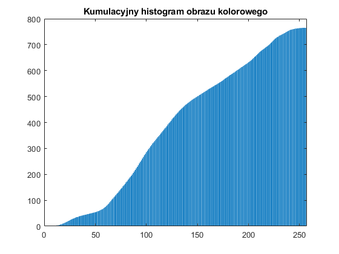
zad 3
clear all; close all; clc;
ImColor = imread('Lenna_(test_image).png');
ImGray = rgb2gray(ImColor);
b = 100;
LUT = zeros(1,256);
for i=1:256
helperVal = (i-1) + b;
if helperVal < 0
LUT(i) = 0;
elseif helperVal > 255
LUT(i) = 255;
else
LUT(i) = helperVal;
end
end
for y=1:size(ImGray,2)
for x=1:size(ImGray,1)
ImGray_Shift(x,y) = LUT(ImGray(x,y));
ImColor_Shift(x,y,:) = LUT(ImColor(x,y,:));
end
end
montage({ImGray,uint8(ImGray_Shift),ImColor,uint8(ImColor_Shift)},"Size",[2 2]); title('Obraz w odcieniach szarości i kolorowy po przesunięciu o ' + string(b));
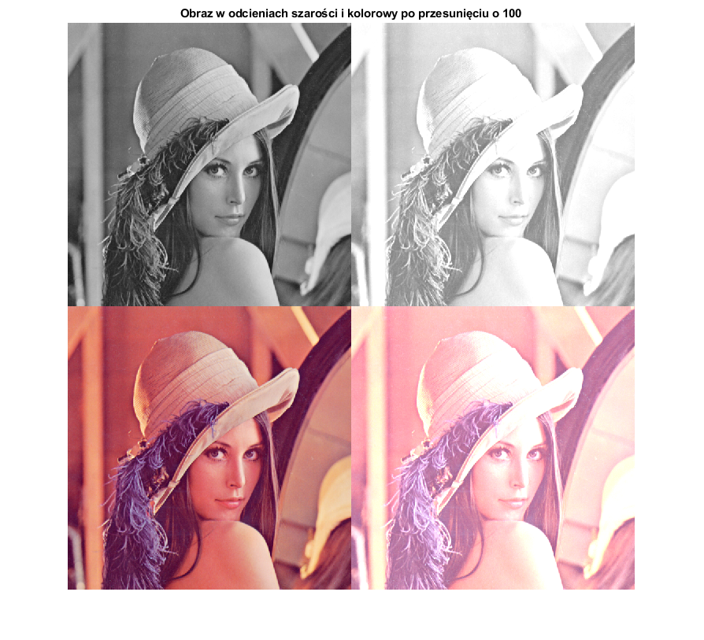
zad 4
clear all; close all; clc;
ImColor = imread('Lenna_(test_image).png');
ImGray = rgb2gray(ImColor);
HistGray = imhist(ImGray);
HistColor = imhist(ImColor);
minImg = min(min(ImGray));
maxImg = max(max(ImGray));
minImgColor = min(min(ImColor));
maxImgColor = max(max(ImColor));
for y=1:size(ImGray,2)
for x=1:size(ImGray,1)
ImGray_second(x,y) = (255/(maxImg-minImg))*(ImGray(x,y)-minImg);
for z=1:3
ImColor_second(x,y,z) = (255/(maxImgColor(z)-minImgColor(z)))*(ImColor(x,y,z)-minImgColor(z));
end
end
end
montage({ImGray,ImGray_second,ImColor,ImColor_second},"Size",[2 2]);
figure; imhist(ImGray); title('Histogram bazowego obrazu w odcieniach szarości');
figure; imhist(ImGray_second); title('Histogram rozszerzony obrazu w odcieniach szarości');
figure; imhist(ImColor); title('Histogram bazowego obrazu kolorowego');
figure; imhist(ImColor_second); title('Histogram rozszerzony obrazu kolorowego');
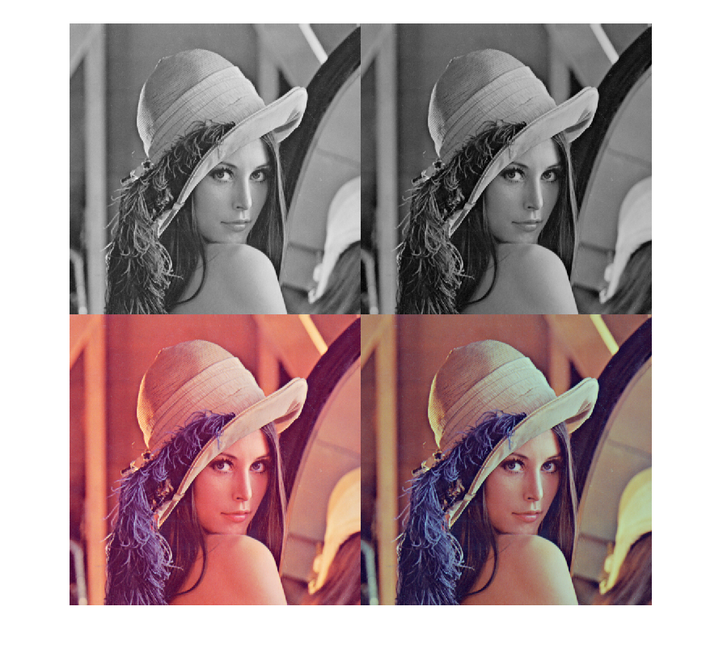

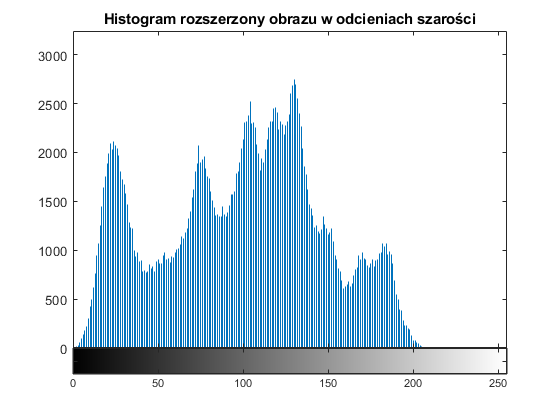 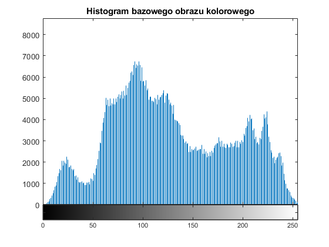 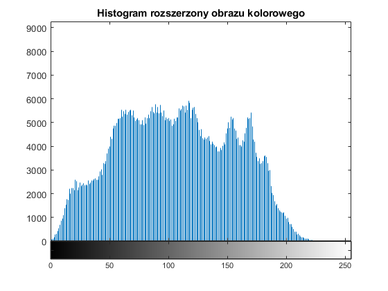
zad 5
clear all; close all; clc;
rangeMin = 255;
rangeMax = 376;
ImColor = imread('Lenna_(test_image).png');
ImGray = rgb2gray(ImColor);
GrayArray(1,:) = ImGray(:);
GrayArray = sort(GrayArray)';
[ImVectGray, VectValGray] = groupcounts(GrayArray);
ColorRedArray_Base = ImColor(:,:,1);
ColorRedArray(1,:) = ColorRedArray_Base(:);
ColorRedArray = sort(ColorRedArray)';
[ImVectRed, VectValRed] = groupcounts(ColorRedArray);
ColorGreenArray_Base = ImColor(:,:,2);
ColorGreenArray(1,:) = ColorGreenArray_Base(:);
ColorGreenArray = sort(ColorGreenArray)';
[ImVectGreen, VectValGreen] = groupcounts(ColorGreenArray);
ColorBlueArray_Base = ImColor(:,:,3);
ColorBlueArray(1,:) = ColorBlueArray_Base(:);
ColorBlueArray = sort(ColorBlueArray)';
[ImVectBlue, VectValBlue] = groupcounts(ColorBlueArray);
for i=1:size(ImVectGray)
if ImVectGray(i) >= rangeMin
setMinGray = VectValGray(i);
break;
end
end
for j=size(ImVectGray):-1:1
if ImVectGray(j) >= rangeMax
setMaxGray = VectValGray(j);
break;
end
end
for i=1:size(ImVectRed)
if ImVectRed(i) >= rangeMin
setMinRed = VectValRed(i);
break;
end
end
for j=size(ImVectRed):-1:1
if ImVectRed(j) >= rangeMax
setMaxRed = VectValRed(j);
break;
end
end
for i=1:size(ImVectGreen)
if ImVectGreen(i) >= rangeMin
setMinGreen = VectValGreen(i);
break;
end
end
for j=size(ImVectGreen):-1:1
if ImVectGreen(j) >= rangeMax
setMaxGreen = VectValGreen(j);
break;
end
end
for i=1:size(ImVectBlue)
if ImVectBlue(i) >= rangeMin
setMinBlue = VectValBlue(i);
break;
end
end
for j=size(ImVectBlue):-1:1
if ImVectBlue(j) >= rangeMax
setMaxBlue = VectValBlue(j);
break;
end
end
for y=1:size(ImGray,2)
for x=1:size(ImGray,1)
ImGray_second(x,y) = (255/(setMaxGray-setMinGray))*(ImGray(x,y)-setMinGray);
ImCol_second(x,y,1) = (255/(setMaxRed-setMinRed))*(ImColor(x,y,1)-setMinRed);
ImCol_second(x,y,2) = (255/(setMaxGreen-setMinGreen))*(ImColor(x,y,2)-setMinGreen);
ImCol_second(x,y,3) = (255/(setMaxBlue-setMinBlue))*(ImColor(x,y,3)-setMinBlue);
end
end
montage({ImGray,ImGray_second},"Size",[2 1]);
figure; montage({ImColor,ImCol_second},"Size",[2 1]);
figure; imhist(ImGray); title('Histogram bazowego obrazu w odcieniach szarości');
figure; imhist(ImGray_second); title('Histogram rozszerzony obrazu w odcieniach szarości');
figure; imhist(ImColor); title('Histogram bazowego obrazu w kolorze');
figure; imhist(ImCol_second); title('Histogram rozszerzony obrazu w kolorze');
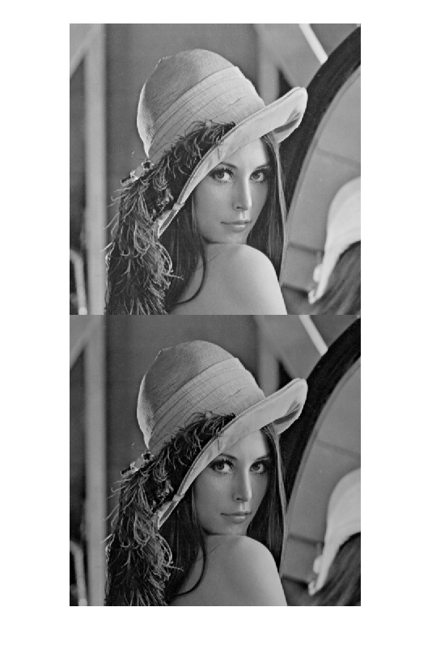 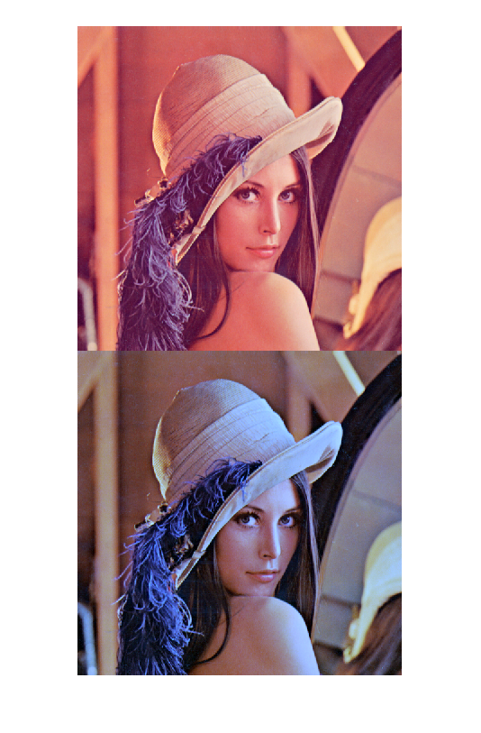 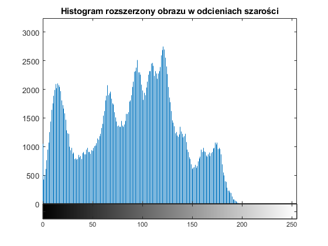 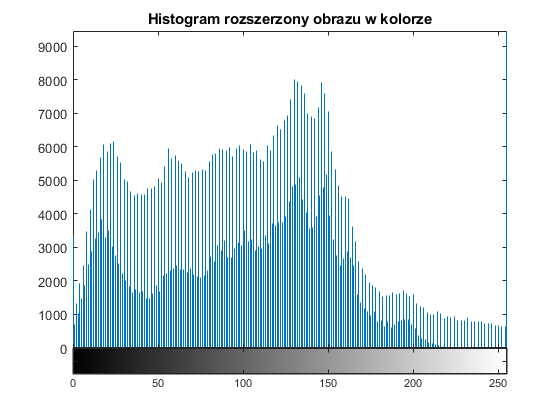
zad 6
clear all; close all; clc;
ImColor = imread('Lenna_(test_image).png');
ImGray = rgb2gray(ImColor);
R = zeros(1,256);
G = zeros(1,256);
B = zeros(1,256);
GR = zeros(1,256);
nmbPixels = size(ImGray,1)*size(ImGray,2);
for y=1:size(ImColor,2)
for x=1:size(ImColor,1)
R(ImColor(x,y,1)) = R(ImColor(x,y,1)) + 1;
G(ImColor(x,y,2)) = G(ImColor(x,y,2)) + 1;
B(ImColor(x,y,3)) = B(ImColor(x,y,3)) + 1;
GR(ImGray(x,y)) = GR(ImGray(x,y)) + 1;
end
end
for n=1:256
DR(n) = sum(R(1:n))/nmbPixels;
DG(n) = sum(G(1:n))/nmbPixels;
DB(n) = sum(B(1:n))/nmbPixels;
DGR(n) = sum(GR(1:n))/nmbPixels;
end
RI = find(DR,1); DR_first = DR(RI);
GI = find(DG,1); DG_first = DG(GI);
BI = find(DB,1); DB_first = DB(BI);
GRI = find(DGR,1); DGR_first = DGR(GRI);
for i=1:256
R_LUT(i) = round(((DR(i)-DR_first)/(1-DR_first))*255);
G_LUT(i) = round(((DG(i)-DG_first)/(1-DG_first))*255);
B_LUT(i) = round(((DB(i)-DB_first)/(1-DB_first))*255);
GR_LUT(i) = round(((DGR(i)-DGR_first)/(1-DGR_first))*255);
end
for y=1:size(ImGray,2)
for x=1:size(ImGray,1)
ImGray_second(x,y) = GR_LUT(ImGray(x,y));
ImColor_second(x,y,1) = R_LUT(ImColor(x,y,1));
ImColor_second(x,y,2) = G_LUT(ImColor(x,y,2));
ImColor_second(x,y,3) = B_LUT(ImColor(x,y,3));
end
end
montage({ImGray,uint8(ImGray_second), ImColor, uint8(ImColor_second)},"Size",[2 2]);
figure; imhist(ImGray); title('Histogram obrazu szarego pierwotnego');
figure; imhist(uint8(ImGray_second)); title('Histogram obrazu szarego po przetworzeniu');
figure; imhist(ImColor); title('Histogram obrazu kolorowego pierwotnego');
figure; imhist(uint8(ImColor_second)); title('Histogram obrazu kolorowego po przetworzeniu');
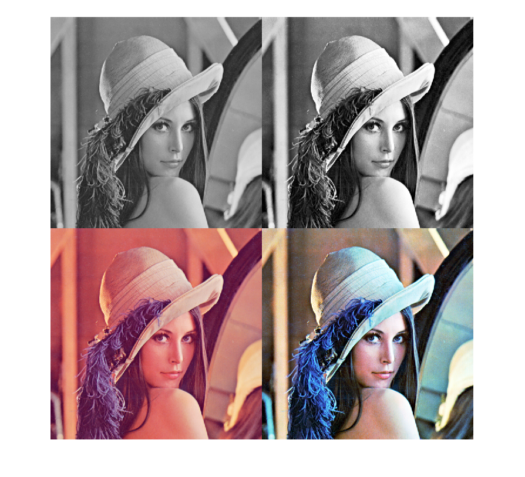 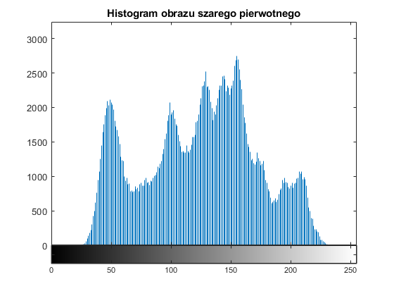 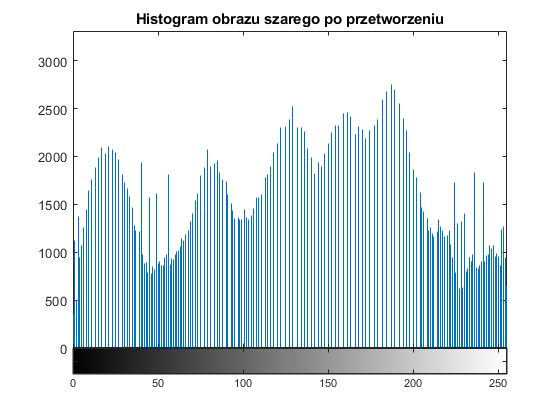 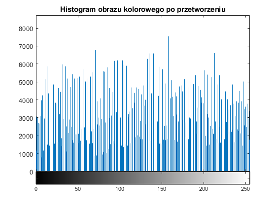